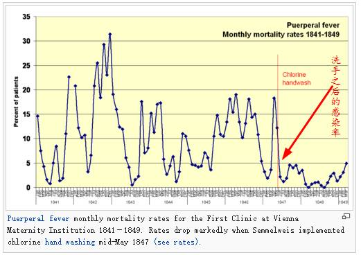
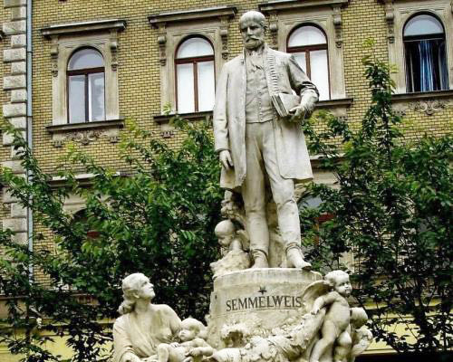

你好，欢迎来到《医学通识50讲》，我是薄世宁。
1954年1月10日，英国海外航空781号航班在地中海上空发生解体，机上35人无一幸存。
事故调查持续很久，发现飞机的所有机械都没问题。机长也没有误操作。
那为啥飞机好好的，就会在天上自动解体了呢？
经过大海捞针一样的排查，最后发现问题竟然出在窗户上。
那个时候，飞机窗户都是方形的。这样的设计，使得飞行过程中压力会堆积在尖锐的角上，造成玻璃破碎，继而机身解体。
这就是设计的错误，是认知局限带来的错误。
找到了这个错误，我们今天乘坐的所有飞机，舱门和窗户已经改成椭圆形了。一旦纠正错误，带来的价值也是不可估量的。
同样，医生也会出错。
美国医生葛文德在他的《清单革命》里，把医生的错误分成两类：无知之错和无能之错。
无知之错是指没有掌握正确知识而犯的错，飞机解体这个案例就是无知之错。而无能之错是指有了知识，没有正确运用而犯的错。
在医学发展史上，曾经就发生过一件因为无知之错，给病人带来伤害的病例。
纠正这个错误的人，就是这节课要说到的大医生——塞麦尔维斯（Ignatius Philipp Semmelweis），我们可以叫他“塞医生”。
产妇死亡之谜
1846年，相当于清朝道光年间，奥地利维也纳总医院是当地最大、最好的医院。
每年在这个医院出生的孩子大约6000-7000名。但是，这么大的医院却正在发生着一个巨大的错误。
这天早上，产科塞医生去上班。他刚走到病房门口，就被一个孕妇拦住了。他刚要问，“咣当”这个孕妇跪在地上了。
“别这样，快起来说话。”塞医生说。
这个孕妇嚎啕大哭：“塞医生，我求求你，千万别让我住一病区，我可不想娃娃生下来就没了娘。”
这是怎么回事呢？
原来，维也纳总医院有两个病区：一病区和二病区。两个病区规模差不多，每年出生的孩子数量也差不多。但是，一病区死亡率非常高。
根据当时的统计，在1840-1846年，这六年期间，一病区和二病区各自收了大约两万名产妇。
但是，一病区死了将近4000人；而二病区死了700人。这么一算，你就知道在当时，尤其是在一病区生孩子，是多恐怖了吧？
塞医生的日记是这么写的：“产妇会出现寒战、高热，然后呼吸困难，几天人就没了。”
我解释一下，这种病叫做产褥热，也就是生孩子期间的高热。
我们今天知道，怀孕期间孕妇的子宫血流非常丰富，血管会扩张增粗，为的是给胎儿供给更多营养。
但是，这种丰富的血流也给细菌提供了肥沃的土壤。产妇容易感染，而且一旦感染很难控制。这就是产褥热。
但是，当时医学界根本不知道还有细菌的存在，更不知道感染是怎么回事。
塞医生在日记写道：“数个世纪以来的研究告诉我们，产妇是死于一种看不见的传染病，原因可能是空气的变化或外层空间的影响，或地球本身的移动，如地震。”
今天，我们对于这种解释肯定不相信。
塞医生也不信。地球运动怎么可能带来产妇发热呢？他意识到一定有错，但却不知道到底错在哪里。
这就是无知之错。整个理论体系都错了，体系内的人就很难找到原因。
对于死亡率高，无论是医生还是病人都会认为可能是没有更好的药，或者是外层空间带来的问题，或者是受到了诅咒惩罚。
很难有人跳出体系，从一个更高的层面去审视和发现这种无知之错。
塞医生虽然质疑，但是他也找不到原因。
你可能会想，是不是通风问题？床位之间的距离问题？或者营养问题呢？塞医生调查过了，都不是。
那是不是接生手法的问题呢？也不是。
一病区是医生接生，二病区是助产士接生。按理说，医生的手法不会比助产士差，塞医生还专门盯着这些医生，他们接生的手法、姿势，都没问题。
医院的洗手革命
调查陷入僵局。
塞医生在日记里说：“这使我如此痛苦，生活似乎毫无价值。”
这个时候，发生了一件看似偶然的事情。
一个医生给死亡的产妇做尸体解剖的时候，不小心划破了手指。然后这个医生也出现了高热、寒战，很快就死了。症状和产褥热的产妇一模一样。
讲到这，你是不是想到了白求恩医生呢？白求恩就是在做手术的时候划破了手指，之后感染而死。
常识告诉我们这是感染。一定是什么东西，通过伤口进了这个医生的身体，所以才会出现高热、寒战。
但是在当时，微生物理论体系还没有建立。塞医生想：会不会是尸体上的什么“毒”呢？
他认为，产妇发热一定是因为医生在做完尸体解剖后不洗手，把这种“毒”传给了产妇。
二病区的助产士不需要尸体解剖，她们在进产房前没有接触过尸体，所以她们的手上没有“毒”，也不会感染产妇。
接下来，塞医生要求每个医生护士都用含有漂白粉的水洗手，洗完之后，才允许去接生。
效果怎么样呢？可以用奇迹来形容。
一病区实行洗手后，当月的病死率就从18.27%迅速地降到了2.19%。
下面这张图，就是洗手前后病死率对比的图。

到此，塞医生以不可辩驳的事实，验证了引起产褥热的原因就是尸体上的“毒”，也就是细菌。细菌经过医生的手，引起了产妇的感染和死亡。这就是体系内部的无知之错。
只要经过严格洗手这项简单的操作，就可以在一定程度上有效地预防产褥热。
这项制度发展到今天，就是医院的洗手制度。
今天，洗手制度在医院人尽皆知，甚至有了正确洗手的规范方法。在特殊科室比如手术室、产房，甚至要求医务人员正确洗手率必须达到100%。
医学就是在逐步纠错中慢慢成长的。
不懂得吸取教训的人会重复过去的错误，只有直面错误，将其内化为属于自己的原则系统，才能保持进步和成长。
纠正无知之错靠提高整体认知
那么，在医学体系内部，有没有方法去发现和纠正无知之错呢？
有。
你可能注意到了，在塞医生的病例里有一个细节。就是医院分了两个区，两个区的死亡率有显著差别。所以，塞医生能够发现问题，促使他去寻找原因。
假设维也纳总医院只有一个病区，或者两个病区死亡率接近。那么，再天才的医生也很难去怀疑是体系内部出了问题。
所以，科学的研究方法，才能判断某项治疗或者某项措施是否真的让病人获益，这就是循证医学。
我在前面的课程里讲过循证医学，它告诉我们沿袭已久的经验未必可靠。循证医学，就是降低体系无知之错的一种科学方法。
其实，这两个病区之间的病死率对比，就是一种不严格的对照研究。在循证医学的证据分级中，对照研究得出的结论只是级别偏低的证据。
在今天，我们可以通过大样本随机对照研究得出结论，或者综合评价世界上可靠的研究结论。根据这些结论制定某项措施或者治疗方法，也就大大地降低了无知之错。
那么，有了方法就一定能纠正无知之错吗？
未必。
再回到塞医生这个病例。1850年，塞医生在集体会议上宣布他的发现。但是，他等来的不是欢呼，而是攻击。
他写了文章却一直不被发表。后来，好不容易发表了，也并没有在医学界引起大家的关注。再后来塞医生丢了工作，出现抑郁，因为精神失常被送进了精神病院。再后来，他被精神病院的保安用棍棒打死，享年47岁。
你可能会认为，这是自我纠错、自我揭短，从而受到了保守势力的攻击。但是我却不完全这么认为。
只有提高整体认知，才是纠正无知之错的根本。
在以前，关于传染病，人们要么认为是四体液不平衡，是人体内部出问题了。要么认为是“瘴气”或者是外层空间出问题了。这两种学说带来的认知，显然不能演化出有效的方法。
1543年，意大利帕多瓦大学的维萨里（Andreas Vesalius）发表《人体的构造》（De humani corporis fabrica），标志着现代解剖学诞生；
1761年，意大利解剖学家莫尔加尼（Giovanni Battista Morgagni）发表《病灶与病因》（De Sedibus et Causis Morborum per Anatomen Indagatis），建立了病理解剖学；
后来，人类有了显微镜，在放大400倍之后看到了细菌轮廓，放大到1000倍以后看到了清晰的细菌形态；
再后来，巴斯德（Louis Pasteur）和李斯特（Joseph Lister）奠定了微生物理论，证明了细菌可以传染疾病，严格的消毒和防护制度，可以有效避免交叉感染。
只有整体认知提高，才是解决无知之错的终极方案。一旦无知之错被发现、被纠正，那么必将带来一个巨大的突破。
塞麦尔维斯曾说：
洗手制度，掀起了一场纠正体系无知之错的革命。
在今天，有了微生物理论、消毒制度、医院感染防控制度、标准化防护制度、抗生素预防与合理使用、外科手术中的无菌原则等等。
医学通过不断地纠正各种错误，再加上各种新型药物和助产技术，以及科学的规范，给予病人越来越科学的治疗。
2018年，中国孕产妇病死率是18.3/10万，这个数字大约是塞医生当年一病区产妇病死率的1/1000。
塞医生被全世界称为“母亲的救星”，他的雕像屹立在匈牙利广场上，屹立在很多医院的花园里。

医学的路，永远在纠错中前行。
下节预告
我国公共卫生制度是如何建立起来的？下节课，我们介绍以“肉身”抗击中国鼠疫的医生——伍连德。